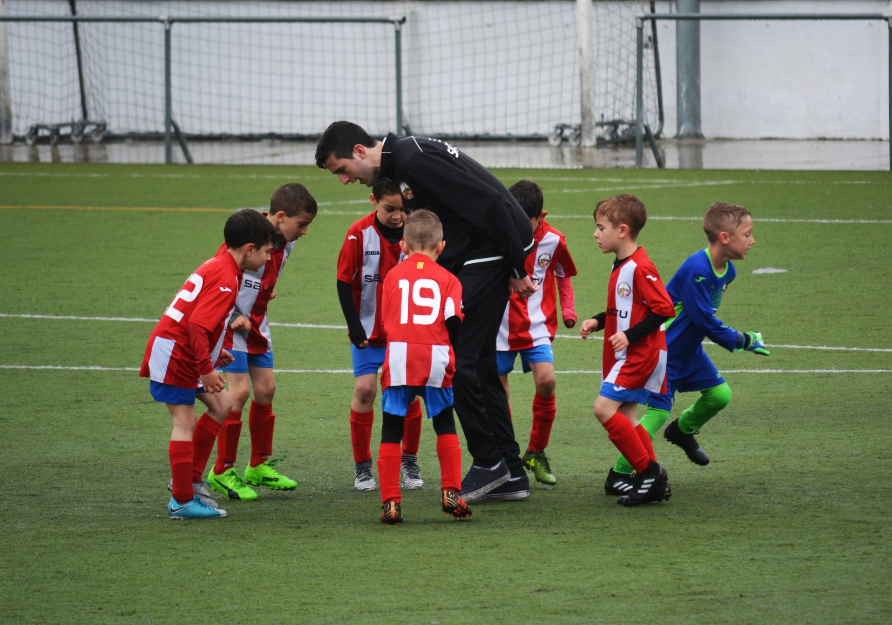
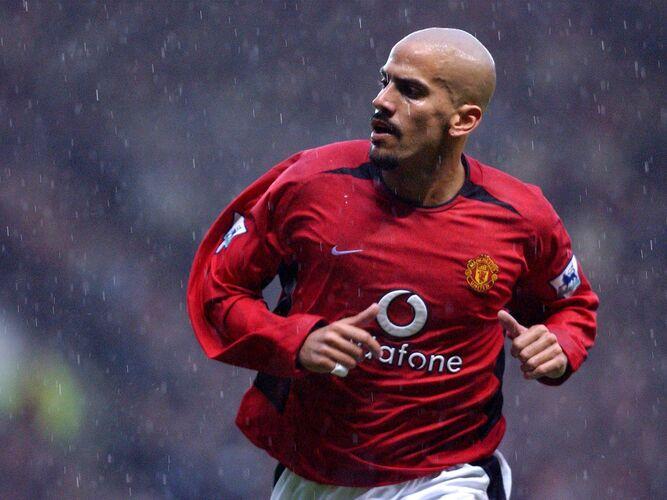
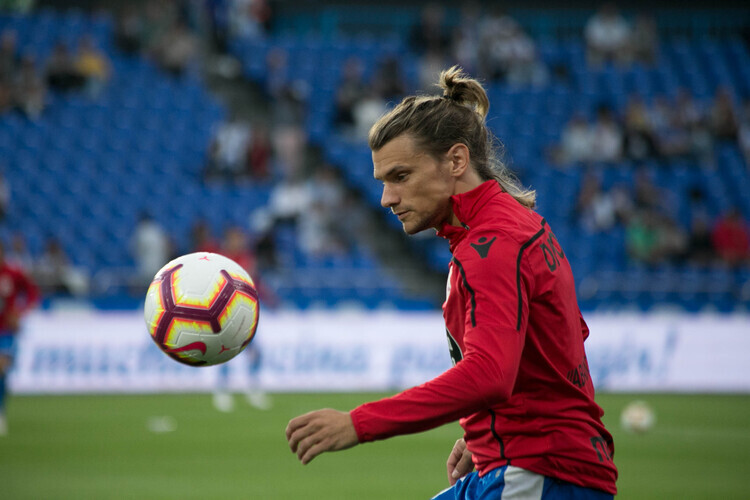
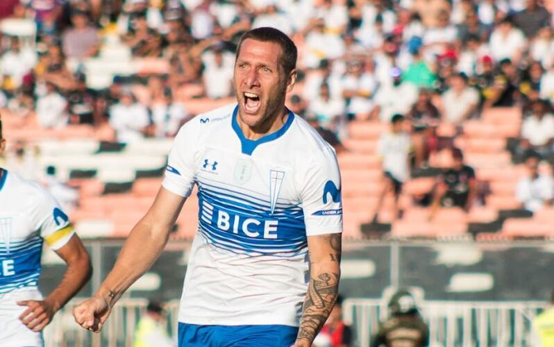
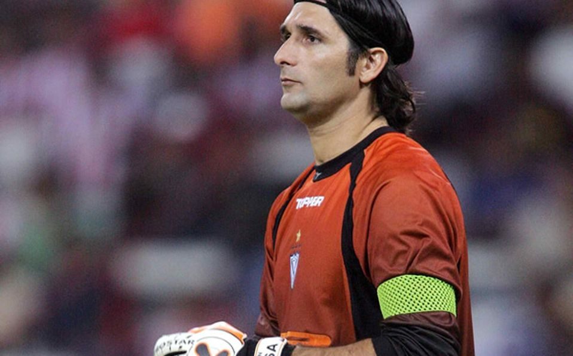
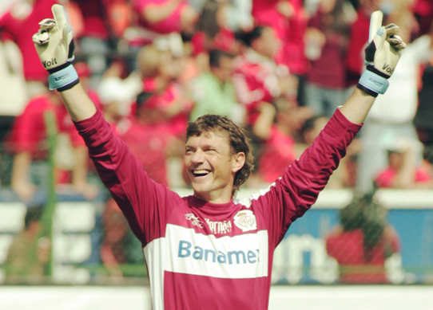
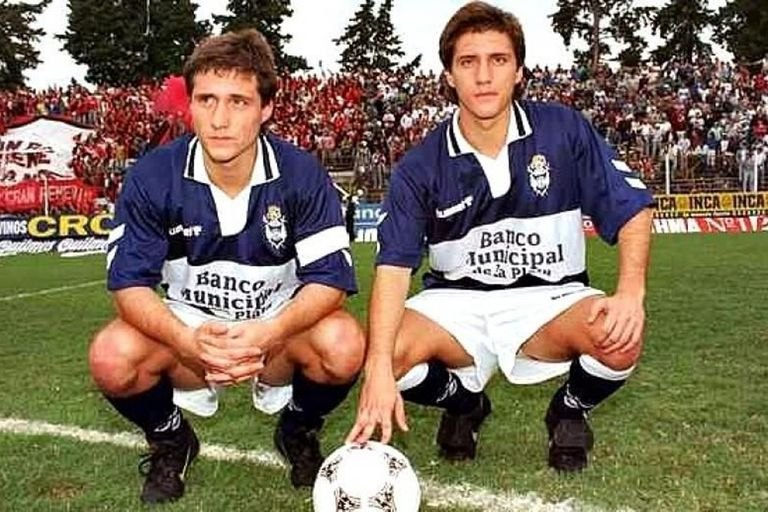

Jugadores destacados que surgieron de Lifipa

Títulos:
14
Selección:
73
PJ
Juan Sebastián Verón
Nacido en el club "Estudiantes", es un exfutbolista argentino. Jugaba como centrocampista y se destacó en Estudiantes de La Plata, además de la Selección Argentina y varios clubes de Argentina y Europa.
Mas info
Títulos:
6
Selección:
61
PJ
Marcos Rojo
Nacido en el club "Malvinas", es un futbolista argentino. Juega de defensa central o lateral izquierdo y su equipo actual es Boca Juniors de la Liga Profesional Argentina.
Mas info
Títulos: 14
Goles
convertidos:
298
Martín Palermo
Nacido en el club "For Ever", es un exfutbolista argentino. Se desempeñaba en la posición de delantero centro, donde llegó a destacarse como uno de los mejores y más icónicos de la historia de Boca Juniors y del fútbol argentino.
Mas info

Títulos:
4
Partidos
jugados:
346
Sebastián Dubarbier
Nacido en el club "Toronto City", es un futbolista profesional argentino que se desempeña como lateral izquierdo. Jugó tanto en Argentina, como en Europa.
Mas info
Títulos:
23
Goles
convertidos:
176
Guillermo Barros Schelotto
Nacido en el club "For Ever". Es un exfutbolista y actual entrenador argentino. Jugaba como delantero. Actualmente dirige a la Selección de Paraguay.
Mas info

Títulos:
7
Selección:
2
PJ
Luciano Aued
Nacido en el club "Toronto City", es un futbolista argentino. Juega como mediocampista defensivo y su equipo actual es la Universidad Católica de la Primera División de Chile.Juega de defensa central o lateral izquierdo y su equipo actual es Boca Juniors de la Liga Profesional de Argentina.
Mas info
Títulos:
4
Vallas
invictas: 135
PJ
Fernando Monetti
Nacido en el club "Alumni", es un futbolista argentino. Se desempeña como arquero. Actualmente se encuentra en San Lorenzo.
Mas info

Títulos:
4
Años
activo:
23
Gastón Sessa
Nacido en el club "For Ever", es un ex futbolista argentino. se desempeñaba como arquero y su último club fue Atlético Chascomús.
Mas info

Títulos:
10
Años
activo:
26
Hernán Cristante
Nacido en el club "Asociación Brandsen", es un exfutbolista argentino. Se desempeñaba como arquero. Tiene el récord de imbatibilidad en Primera División de México con 772 minutos sin recibir anotación.Forma parte de las Leyendas del Deportivo Toluca FC.
Mas info
Títulos
jugador: 7
Títulos
entrenador:
3
PJ
Gustavo Barros Schelotto
Nacido en el club "For Ever", es un exfutbolista argentino. Jugaba como mediocampista por derecha y su primer equipo fue Gimnasia y Esgrima La Plata.
Mas info